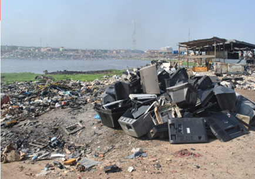
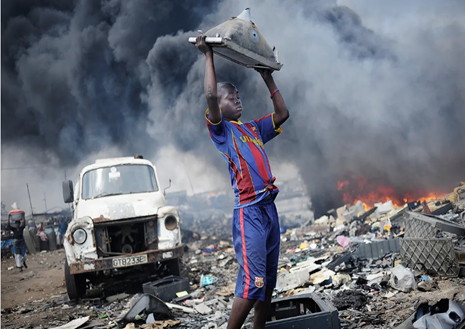
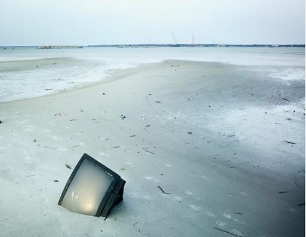
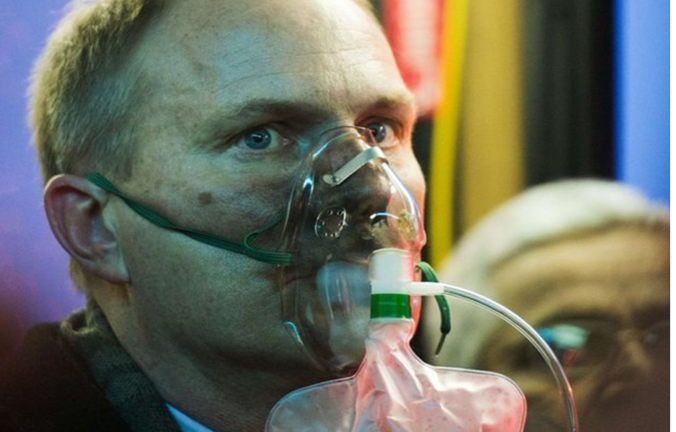
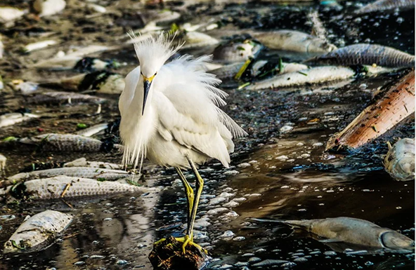
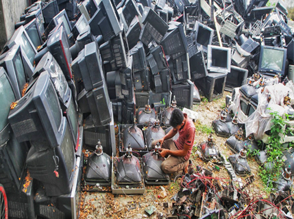
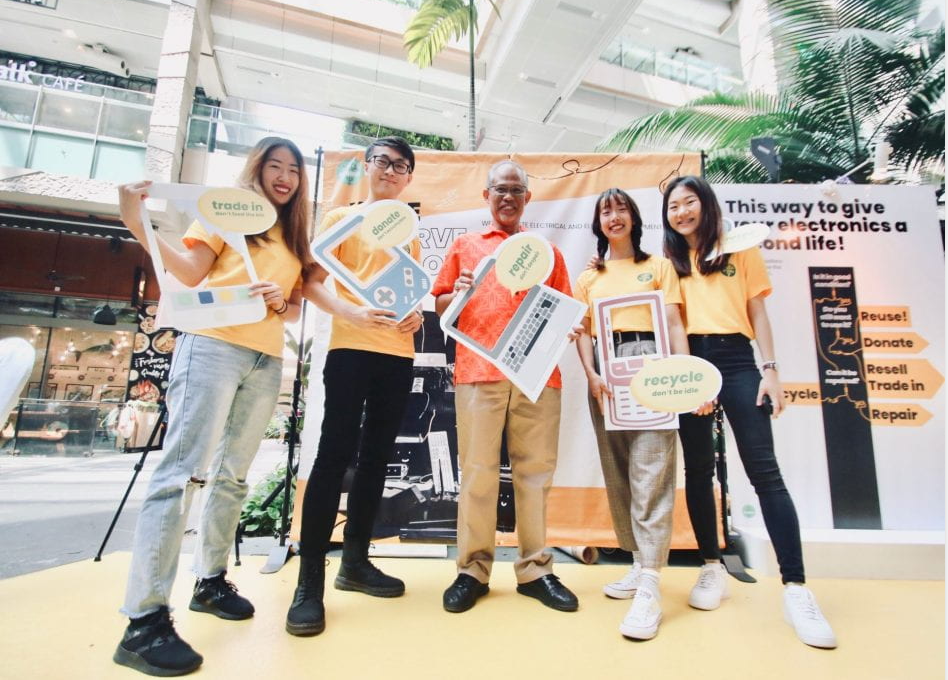
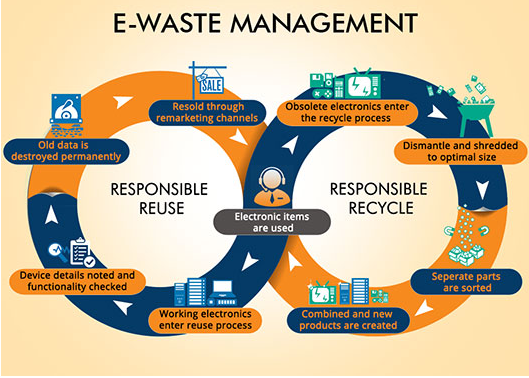
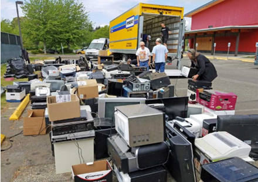
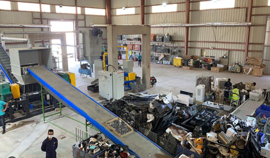

💡FUN FACT :
China and certain countries in Africa receive up to 80% of the world’s e-waste (Heacock alml,
2016).
What is a Television?
The word television comes from the Greek prefix tele and the Latin word vision or
“seeing
from a distance.” An electronic system with a screen or set of lenses that transmit transient images
of fixed or moving objects together with sounds that are sent along cables or through space by apparatus.
It
converts light and sound into electrical waves or impulses to a television receiver and reconverts them
into
visible light rays and audible sounds.
Brief History and raw materials of televisions
The first invention of television dated back to the 1920s with black and white images but after the
second
world war (1940s), they started to evolve and this was due to the rise in technological advancement. Along
with other tools, coloured TVs were introduced in the 1960s. Later, flat-screen televisions with higher
production and improved video quality were developed in the 21st century.
Older generations of TVs contain toxic substances like lead, mercury, arsenic, cadmium, chromium and
barium as such, they are difficult to get rid of or to be disposed of. The reduction of these substances
in
21st-century televisions suggests that environmental sustainability was taken into consideration. But is
it
enough? Will it help us overcome the problem of our "ever-lasting e-waste"? Is it only a drop in the ocean
compared to the vast amount of e-waste we have created?
Click on the link below for more information about the history of televisions
History on Televisions
IMPACTS OF TELEVISIONS ON THE ENVIRONMENT
- Land/Soil Pollution
When e-waste is treated as traditional waste and sent to landfills, pollution is completely
unavoidable.
70% oftoxic waste comes from landfills, and these landfills are becoming stricter about refusing
e-waste.
This increased
the use of illegal, untreated, and improper disposal sites. When heavy metals from these devices make
their wayinto the soil, they can seep into groundwater, leading to other bodies of water, and also
change
the composition and activity of the soil microbial community (Giller et al., 1998b). If crops uptake
large
quantities of heavy metals, this will increase the ecosystem feeding relationship and essentially cause
health conditions to every organism that consumes it. Chronic toxic effects of heavy metals when
consumed
can cause gastrointestinalproblems, kidney dysfunction, nervous system disorders, vascular damage,
cancer
and other effects.

- Air Pollution
The increase in e-waste led to materials being mishandled. E-waste can pollute the air when improperly
shredded,melted, or burned. The chemicals that are released while burning e-waste travel thousands of
miles and can cause
illnesses. The manufacturing process of e-waste contributes heavily to air pollution as the factories
utilize different materials to make the devices, as well as emitting gases from the factory and the
major
machines used within the production process.

- Water Pollution
Heavy metals from televisions and other electronics can stick around in crops. Organisms are at
increased
risk of consuming contaminated crops. Groundwater is easily contaminated by heavy metals after seeping
through the soil. This increases water pollution as groundwater leads to larger bodies of water, and if
used for domestic purposes or to meet the basic needs of organisms, it may cause illnesses.

- Global Warming
This refers only to the Earth's rising surface temperature. Every electronic device leaves a carbon
footprint, which adds to the global warming caused by humans(anthropogenic activities) . Electronics
production has the potential to release 10 tons of carbon dioxide into the atmosphere. Considered across
a
device's lifetime, the majority of the carbon dioxide is generated during the manufacturing process,
prior
to the product being bought by customers. This makes low-carbon manufacturing techniques and inputs like
the utilization of recycled raw materials and product lifetime are key factors of the environmental
impact
as a whole.

EFFECTS OF TELEVISIONS ON THE ENVIRONMENT
- Health
The environmental impact of e-waste is linked to a rise in a variety of health concerns. Pollutants in
e-waste can cause health concerns in plants, animals, and humans. This environmental damage has been
tied
to brain, heart,liver, kidney, and skeletal system damage in large animals and humans. If humans use
polluted water for domestic purposes and it is injected into their bodies, it can be a threat to their
health.

- Death to organisms
At low concentrations, it is toxic to all life, including plants, fish, birds, mammals (including
humans), and microorganisms (Eisler 1985; Eisler 2000; Nordberg et al. 2007, ATSDR 2008). It causes
cancer, birth defects, and genetic mutations (Eisler 2000, Nordberg et al.). Consumption of
e-waste-polluted water can increase the mortality rate for aquatic life and terrestrial organisms like
birds. Studies from the PLOS Medicine indicate that the accumulation of heavy metals in water
contributes
to eutrophication, which is the buildup of nutrients like nitrogen and phosphorus in the water,
essentially causing death as algae thrives on the surface of water, blocks the sunlight, decreases water
clarity, and increases the rate of precipitation.

- Climate Change
It has been established that e-waste causes global warming through manufacturing. It does not end
there,
however; global warming contributes to a change in the climate, which is a long-term shift in the
Earth’s
temperature and
weather patterns. This change causes hotter days and long heatwaves. 2015 was recorded as the hottest
year-round,and 2014 previous record. From this trend, we can observe that the temperature increases
every
year. Rising sea level, intense extreme weather events, and ocean warming and acidification are other
causes of climate change. The sea levels are rising due to increased ocean temperatures, which melt ice
caps around the world. A warmer temperature results in the expansion of water’s mass, which is a threat
to
low-lying islands and coastal cities.Weather events like bushfires, cyclones, droughts, and floods
increased progressively as a result of global warming. Lastly, oceans absorb the extra heat and carbon
dioxide more than the air does, which makes the oceans
warmer and more acidic. This bleaches coral reefs, drives stronger storms, and acts as a threat to
shellfish, which can collapse the different ecosystem relationships.

SOLUTIONS TO MITIGATE TELEVISION E-WASTE ON THE ENVIRONMENT
- ✅Refurbishment
Instead of stripping televisions for their raw materials, they should put more effort into refurbishing
old TVs.

- ✅Check for E-Cycling Centers in your region or state
Giving all of your televisions and other electronics that cannot be donated or resold to free sites is
one way to reduce your e-waste. They have local groups that are moderated by volunteers from the
community. Membership is completely free. As an alternative, you can collect all of your e-waste every
month and donate it to a local e-cycling center within your state or region.
Friendly reminder: Wipe the memory on the device and factory reset your mobile device
before reselling, donating or giving it away.
- ✅Purchasing energy star rated appliances
The Environmental Protection Agency's (EPA's) Energy Star Program offers rebates when you discard old
appliances and purchase new energy-efficient alternatives. In addition to being environmentally
responsible, Energy Star
appliances use less electricity, which lowers monthly electric cost. The next time when you purchase a
television or other appliances, opt for Energy Star models.

- ✅Educate Yourself on the Television or appliances you use or is interested in purchasing
Get acquainted with the raw materials being used to manufacture the products you are using or
interested
in through research. Some raw materials are easy to recycle while others aren’t, so be very mindful. The
more you educate yourself, the better you’ll be able to use eco-friendly devices that will not harm the
environment in the long term.
- ✅Encouragement of proper ways of disposing e-waste
Encouraging the general public which includes: schools and work/business places especially
distributors,
to dispose of televisions and other appliances properly through advertisements and campaigns.

- ✅Ewaste managements legislation, law and polices
It is important for the world to embrace healthy recycling practices and pass stronger polices to
control
the growing impact of e-waste on our health and environment. In 2017 Global E waste Moniter, the United
Nations University found that the world produced a total of 44.7 Mt of e-waste. Implementing e-waste
management laws like India in 2012 and 25 states of the United States of America and other countries is
a
good way to start. A good recommendation is for all countries to implement this law as quickly as
possible. Some “developing countries” like Caribbean countries are a bit delayed on this law and it
would
be great if they follow countries like India as an example. In collaboration with legislation like the
Basel Convention which aim is to protect human health and the environment against the adverse effects of
hazardous waste and the E-Waste Coalition.
Read more about E-waste Legislations in countries the world below:
E-waste
Laws,Legislations and Policies
- ✅Use of the 4 R’s (Reduce, Re-use, Recycle and Recover/Restore)
With the four R’s (Reduce, Re-use, Recycle and Recover/Restore) principle, you should be able to:
♻️Reduce: Before purchasing a product check the life span and that way you wont have to replace
it
in a few years. Consider limiting the amount of electronics you own. Instead of looking for an extra
gadget, purchase an electronic that has all the necessary functions you need.
Below is a link below that will inform you how to reduce your e-waste.
♻️Re-use: If you have parts and equipment that are still working try repairing the electronic
device before getting a new one. If it is beyond repair then you can recycle it with proper care.

♻️Recycle:You can recycle your waste using organizations like ZWV that host Electronic Recycling
events.During this event they have trucks that collect e-waste. After the event, everything is taken to
SBK Recycle in Tacoma and stripped of their components,crushed and removed to an appropriate processor.
Example: Mother boards are sent to Japan for processing. Belgium and Japan are the only two countries in
the world that has a plant that processes rare metals components safely. It is inexpensive and
environmentally friendly to recycle rare metals
rather than to mine them. Other major components are sent to metal recycling and LCD screens are sent to
California. There are other organizations like ZWV and Great Lakes Electronics Corporation, so be
informed
and get onboard on your adventure to a world of sustainability.

♻️Recover: E-waste is usually treated by physical methods which includes: sorting, dismantling,
size reduction and separation of metals and plastics) before it is fed into a smelting process which is
performed in furnaces at high temperatures to liberate the valuable metals.

-Save the environment and encourage sustainability and restoration!-